東京・芝浦の食肉市場から届いた黒毛和牛を、その日に切り出してお出ししております。
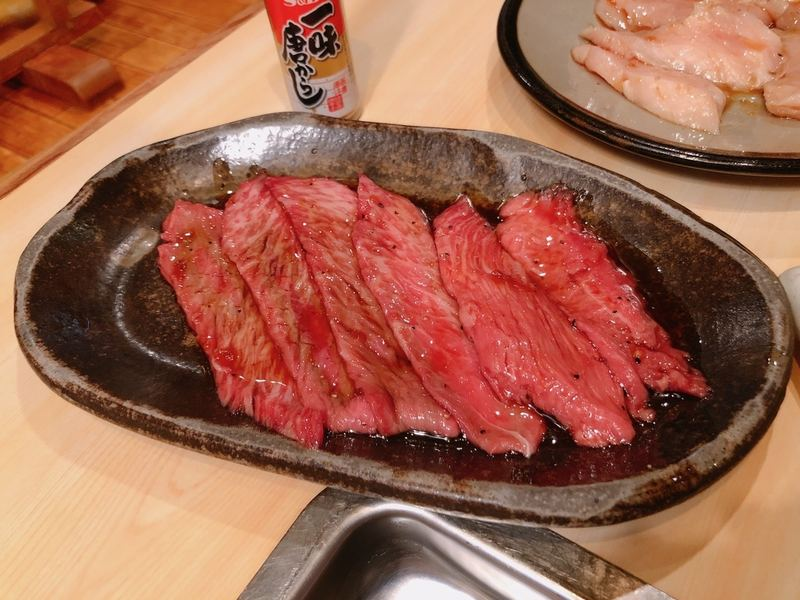
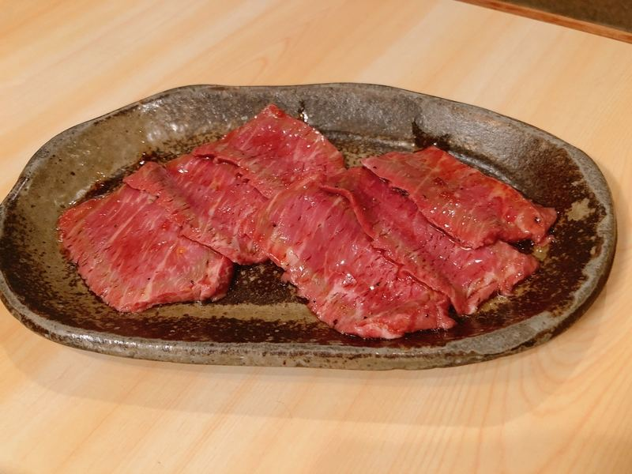
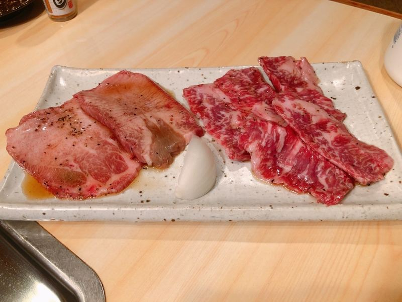
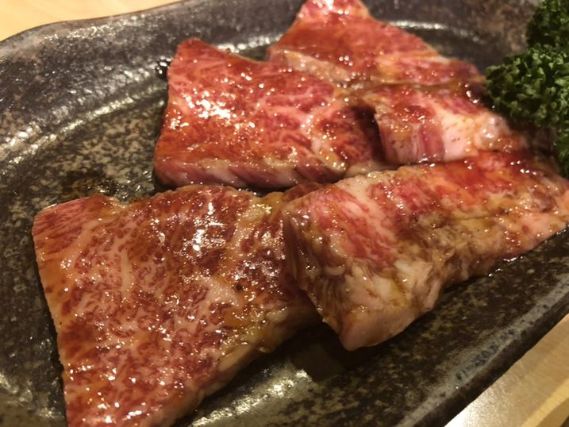
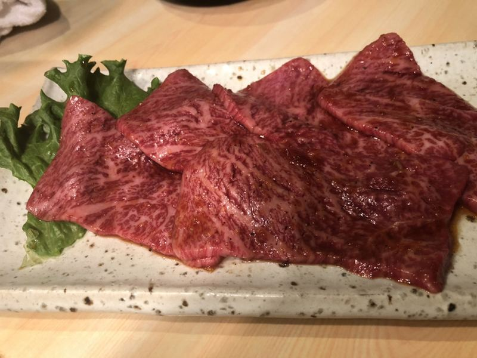
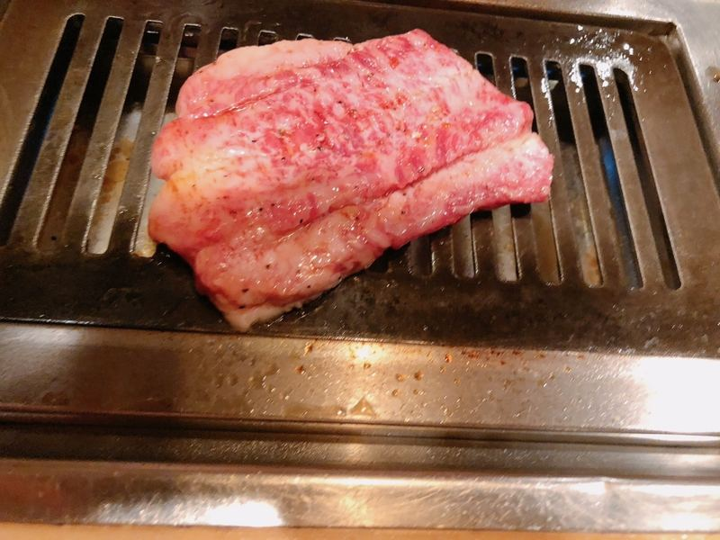
その日に届いたものだけをお出しします。売り切れの節はご容赦くださいませ。
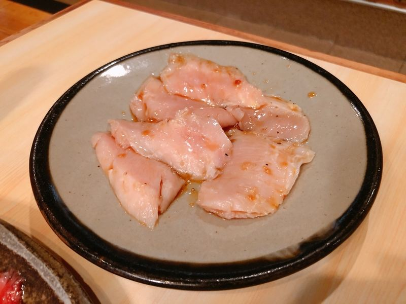
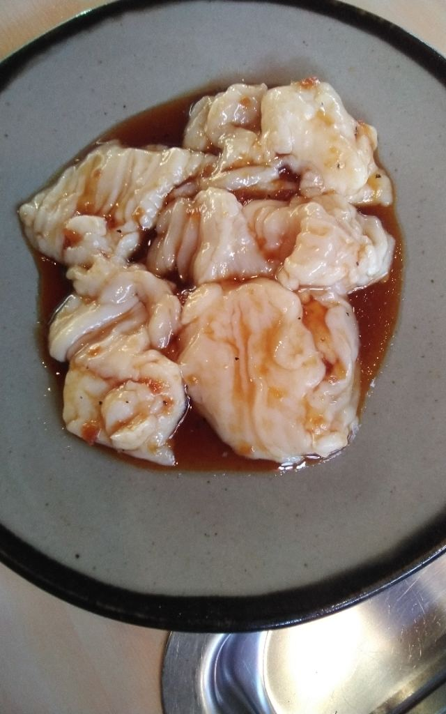
馬刺しは時価でお出ししております。その日のお値段は、お電話でもお答えいたします。
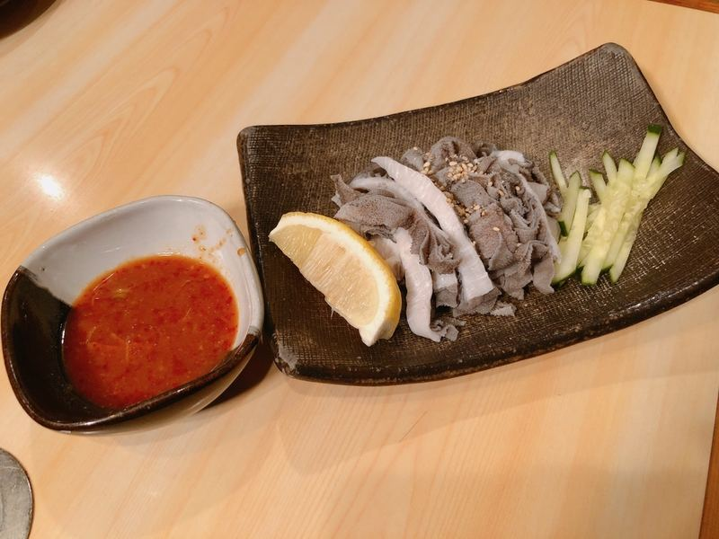
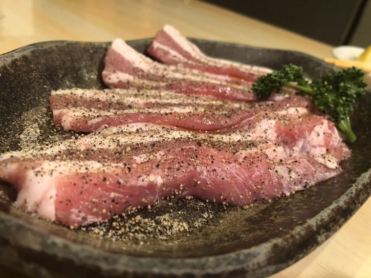
キムチ・ナムル・タレ・辛味噌は、すべて店で仕込んだものです。
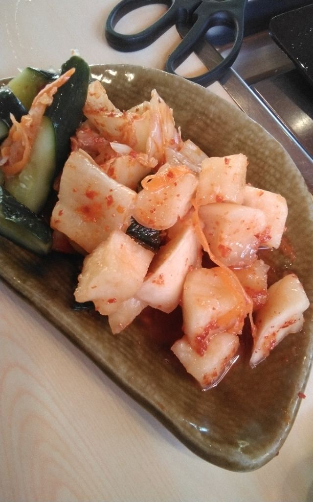
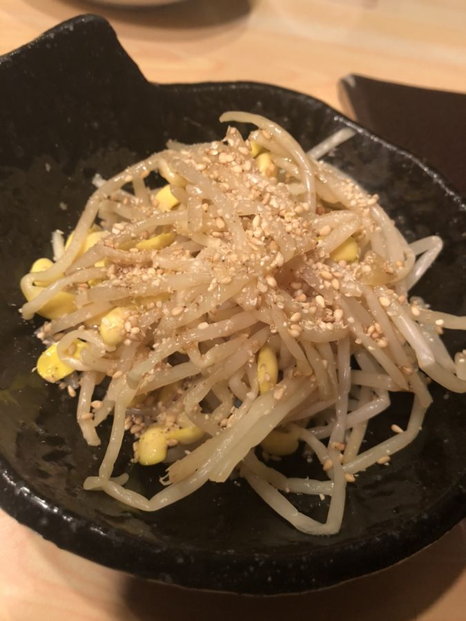
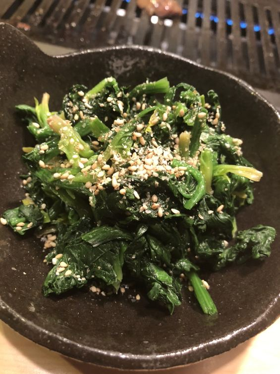
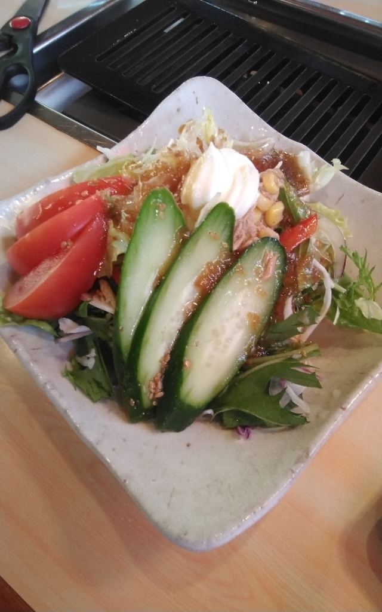
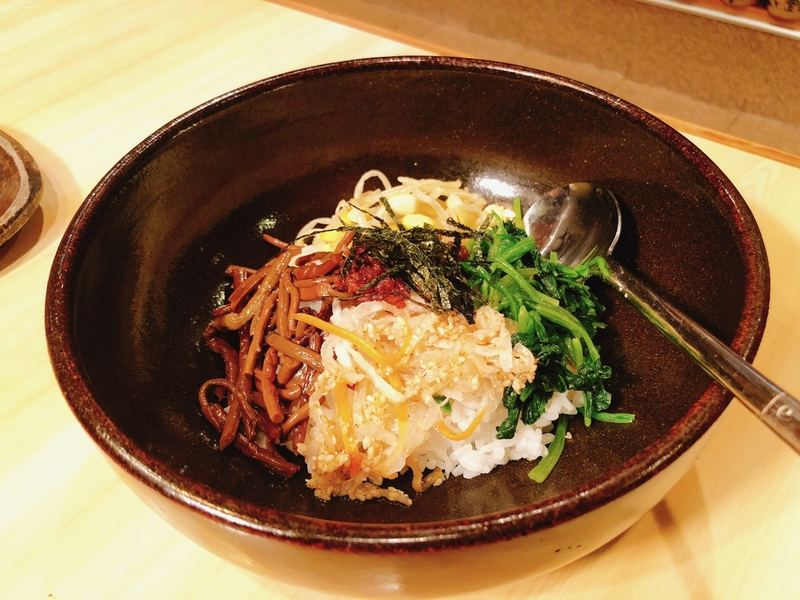
お品書きに載せていない品も、その日の仕入れによってご用意しております。店内のお品書きをご覧くださいませ。
ご予約のお電話は16時からお受けしております。
0280-98-5507お電話でご予約